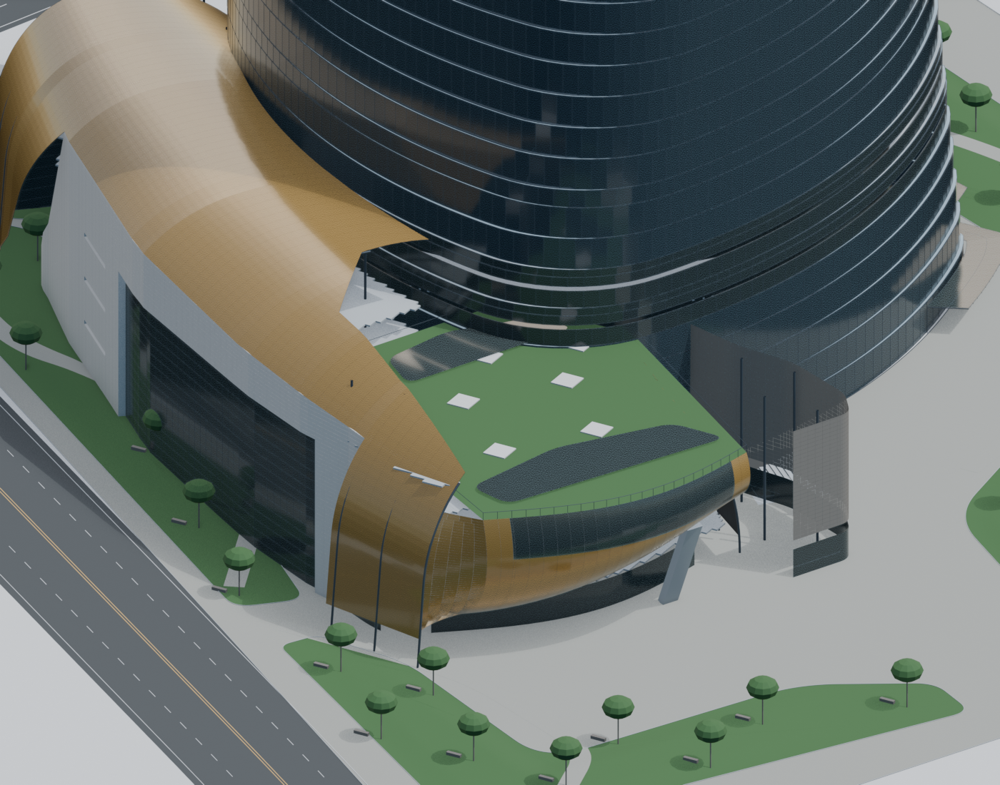
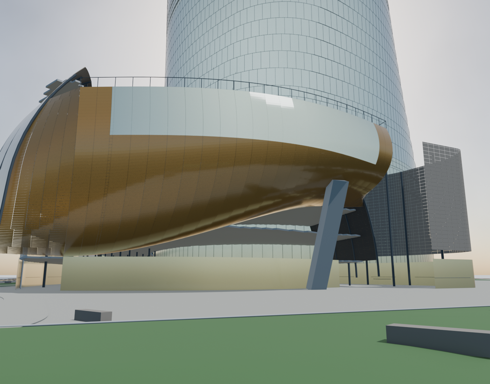
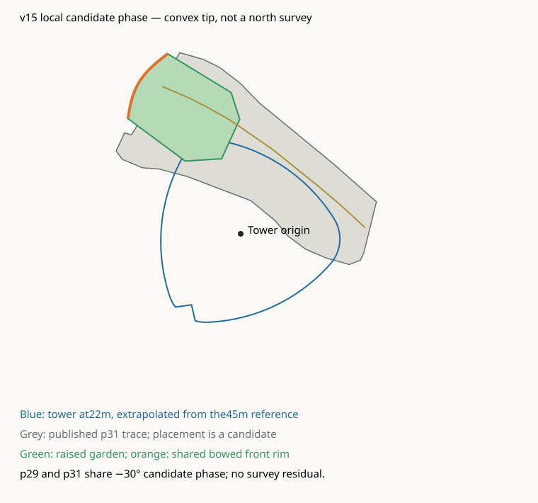
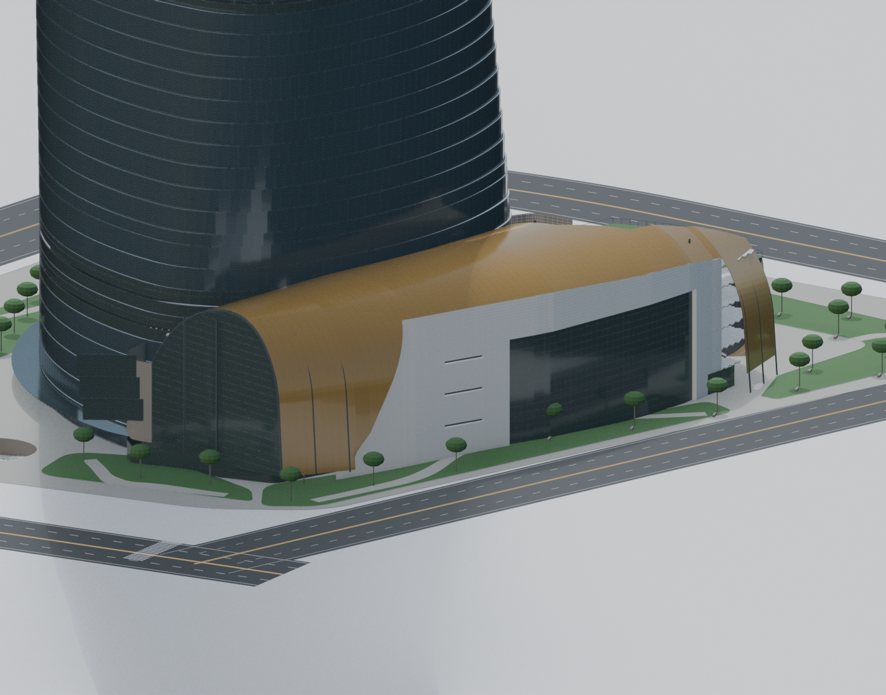
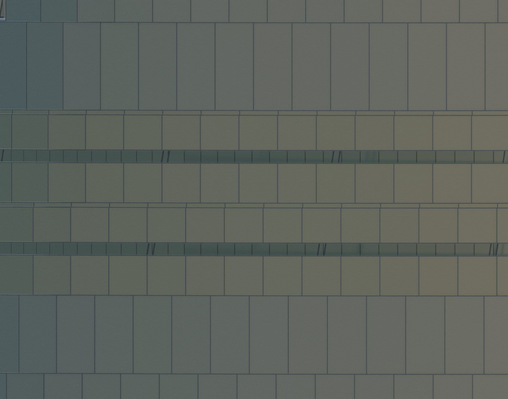

Gensler实际航拍：凸角与金色屋面、庭院和侧面V凹口的关系。相位修改同步应用到裙房与p29场地；真北向待确认。


拓扑对照；镜头未标定，不声明米制拟合误差或竣工精度。原图仅由其发布URL加载，未复制进仓库。
Gensler实际航拍：凸角与金色屋面、庭院和侧面V凹口的关系。相位修改同步应用到裙房与p29场地；真北向待确认。

Gensler/CTBUH设计效果图：用户附件同场景。和实际航拍存在端面材料/曲线差异；只作设计关系参照，不冒充竣工。

SWA Jonnu Singleton-0013实景：金色底面、开放空间与斜柱。右图临时隐藏近处树冠/树干便于核验；保存模型保留植栽。端部标高/曲率仍候选。


局部共同配准与弯曲前沿；蓝色塔楼22m轮廓为45m以下外推，非批准基部CAD。

保留另一端封闭拱口与石材内嵌入口。材料尺寸、位置仍候选。

夹层外部两层各在层高中央切窄环：每段两圈，共16圈。共同楼板交界不再作为切口中心；内B及16块完整转换板保留。0.60m为待确认宽度，父玻璃列/面板身份保留。

| section / storey | 候选层高范围m | 缺带中心m | 宽m |
|---|---|---|---|
| TRANSITION_01_STOREY_01_A_HORIZONTAL_SLIT | [22.22, 27.835] | 25.027 | 0.60 |
| TRANSITION_01_STOREY_02_A_HORIZONTAL_SLIT | [27.835, 33.45] | 30.643 | 0.60 |
| TRANSITION_02_STOREY_01_A_HORIZONTAL_SLIT | [89.514, 94.257] | 91.886 | 0.60 |
| TRANSITION_02_STOREY_02_A_HORIZONTAL_SLIT | [94.257, 99.0] | 96.629 | 0.60 |
| TRANSITION_03_STOREY_01_A_HORIZONTAL_SLIT | [164.275, 168.987] | 166.631 | 0.60 |
| TRANSITION_03_STOREY_02_A_HORIZONTAL_SLIT | [168.987, 173.7] | 171.344 | 0.60 |
| TRANSITION_04_STOREY_01_A_HORIZONTAL_SLIT | [229.914, 234.657] | 232.286 | 0.60 |
| TRANSITION_04_STOREY_02_A_HORIZONTAL_SLIT | [234.657, 239.4] | 237.029 | 0.60 |
| TRANSITION_05_STOREY_01_A_HORIZONTAL_SLIT | [304.614, 309.357] | 306.986 | 0.60 |
| TRANSITION_05_STOREY_02_A_HORIZONTAL_SLIT | [309.357, 314.1] | 311.729 | 0.60 |
| TRANSITION_06_STOREY_01_A_HORIZONTAL_SLIT | [383.875, 388.588] | 386.231 | 0.60 |
| TRANSITION_06_STOREY_02_A_HORIZONTAL_SLIT | [388.588, 393.3] | 390.944 | 0.60 |
| TRANSITION_07_STOREY_01_A_HORIZONTAL_SLIT | [456.275, 460.837] | 458.556 | 0.60 |
| TRANSITION_07_STOREY_02_A_HORIZONTAL_SLIT | [460.837, 465.4] | 463.119 | 0.60 |
| TRANSITION_08_STOREY_01_A_HORIZONTAL_SLIT | [532.875, 537.438] | 535.156 | 0.60 |
| TRANSITION_08_STOREY_02_A_HORIZONTAL_SLIT | [537.438, 542.0] | 539.719 | 0.60 |
环带坐标由候选楼层表推导；未取得全周幕墙深化开孔表。01–40与v14对照页均为历史视图；41–45为本轮模型核验。